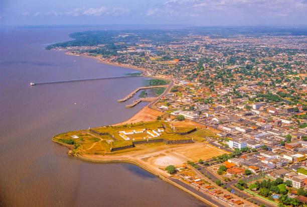

O Amapá é um estado localizado no extremo norte do Brasil, na região Norte, fazendo fronteira com o estado do Pará, a Guiana Francesa e o Suriname. Sua capital é Macapá, cidade que abriga a Linha do Equador, sendo um dos poucos lugares do mundo onde se pode literalmente atravessar os hemisférios Norte e Sul.
